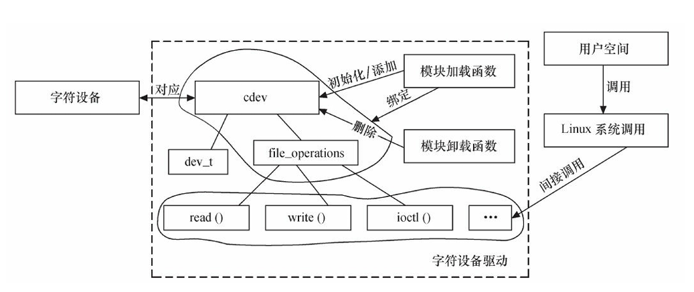
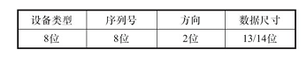
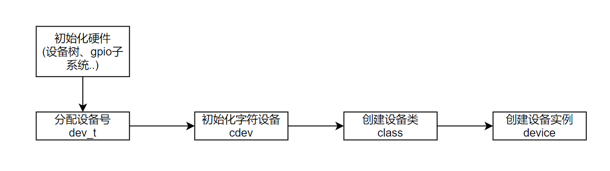

05 字符设备驱动框架
字符设备驱动框架
简介
Linux的字符设备驱动框架是以struct cdev为核心的一套API，通过向内核注册cdev，从而向用户空间提供对设备进行IO操作的接口
注意：Linux字符设备驱动框架主要用于封装设备的IO操作，有别于Linux的设备驱动模型，并不负责设备与驱动的匹配之类的，所以2者通常同时出现
而且不是所有字符设备的驱动都需要用到这个框架，比如一个用了input子系统的按键，它不需要向用户提供IO操作的接口，所以就不需要（其实这是驱动分层的结果，input子系统的核心层会用到该框架来提供用户对
/dev/input/eventXIO操作的能力，但我们自己写的驱动层不需要用）
核心组件

cdev
1 | struct cdev { |
核心成员：
- owner：这个字符设备属于哪个模块
- ops：封装了的I/O操作
- dev：设备号
file_operations
1 | struct file_operations { |
file_operations是Linux的VFS提供的一个对于struct file进行操作的类，VFS用file抽象内存中打开的文件。对于不同类型的文件/设备，I/O操作通常不同，所以会设计这样一个file_operations类
内核与用户空间的数据交互
在对设备节点进行read()和write()操作时，本质上就是内核与用户空间进行数据的交互，我们知道用户空间和内核其实是隔离的，因此在驱动中（内核中）与用户空间进行数据传输需要特定的API：
1 | unsigned long copy_from_user(void *to, const void __user *from, unsigned long n); |
实现原理：
1.检查传入的地址是不是有效的用户空间地址
2.处理页错误
3.数据拷贝
疑问：根据Linux内存空间的布局，对于一个进程来说，其内核空间与用户空间共用1个页表，且内核态时，CPU可以访问任意空间的内存，为啥驱动中（内核态）还要用这个copy_from_userAPI，而不直接访问用户空间的内存并进行数据拷贝？
- 1.考虑了安全性，会做地址有效性的检查
- 2.不是所有体系结构的CPU都可以在内核态直接访问用户空间的内存的，这个API提供了和平台无关的抽象
ioctrl
ioctrl函数一般接收一个命令cmd和参数arg，根据cmd的不同可以进行多种不同的操作。为了避免命令号污染，Linux提供了一个统一的命令命名准则

dev_t
通过cat /proc/devices可以查看当前所有已经使用了的设备号
1 | typedef __u32 dev_t; |
设备号是内核用来唯一标识系统中设备的值，每个设备都有一个唯一的设备号。设备号由主设备号（major number）和次设备号（minor number）组成。dev_t被扩展为32位无符号整数，其中高12位为主设备号，低20位为次设备号
- 主设备号：用于标识设备驱动程序
- 次设备号：用于标识同一类设备中的具体实例
设备号相关宏定义
1 |
设备号的分配
1 | // 静态分配（已有主设备号） |
dev_t dev：: 指向设备号的指针，函数会通过这个指针返回分配的设备号unsigned count：连续设备号的数量const char *name：设备或驱动程序的名称- 返回值：成功时返回0，失败时返回负值
1 | // 动态分配（内核自动决定一个主设备号和次设备号） |
dev: 指向设备号的指针，函数会通过这个指针返回分配的设备号baseminor: 起始次设备号，通常为 0count: 要分配的设备号数量name: 设备的名称
1 | // 释放设备号 |
base：主设备号count：要释放的设备个数
开发步骤

1.根据需求实现设备的具体操作函数
file_operations结构体就如同JAVA中的一个接口类，其中定义了设备具体操作的一些接口（函数指针），包括open()、release()、read()、write()等等，在写驱动模块时，需要实现其中定义的API
2.实现模块的入口/出口的具体函数
- 即实现
xxx_init()和xxx_exit()函数
3.在入口/出口代码中，加入cdev的注册/注销
4.代码中调用module_init(xxx_init)和module_exit(xxx_exit)，将上述2个函数指定为加载/卸载该模块时所调用的函数
5.添加LICENSE和作者信息：不加LICENSE编译会报错
6.交叉编译驱动模块文件(.ko)
- 在编译驱动模块文件时，需要使用Linux内核源码，且不需要写
main()函数，这和之前的程序有很大的区别
7.写驱动模块的测试代码（需要写main()函数）
8.交叉编译测试代码，得到可执行文件，进行测试
字符设备I/O操作底层原理
我们在注册字符设备的驱动时，通常要指定其.file_operations成员变量，使得我们在用户态对字符设备做I/O操作时，能用我们重写的I/O操作来控制设备，这底层的原理到底是什么呢？
1 | static struct file_operations fops = { |
以下面的代码为例，展示字符设备的file_operations到底是怎么被调用的
1 | int fd = open("/dev/my_device", O_RDWR); |
1.文件打开过程 (open)： 当用户进程尝试打开一个文件（例如字符设备文件 /dev/my_device）时，内核通过文件路径找到对应的 inode 结构体。
2.inode 与 file 的关联： 在成功找到 inode 后，内核会为该文件创建一个 file 结构体实例。file 结构体代表一个已打开的文件，包含文件指针、访问模式等。
1 | struct file { |
f_inode指向与该文件关联的inode结构体。f_op指向文件系统或设备驱动程序定义的file_operations结构体。
3.初始化 file_operations： 在打开文件时，内核会通过 inode 结构体找到与设备文件关联的 file_operations 结构体，并将其赋值给 file 结构体中的 f_op 成员。这个 file_operations 结构体通常由设备驱动程序在注册设备时指定。
1 | file->f_op = fops; // fops是设备驱动程序中定义的 file_operations 结构体 |
4.调用 file_operations 函数： 之后，当用户执行 read, write, ioctl 等操作时，内核会使用 file 结构体中的 f_op 指针调用对应的操作函数。